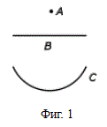
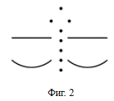

Беседа 3595 от 3877 · Беинса Дуно
Химични елементи
Отче наш.
„Махар Бену Аба“.


Та казвам: Ако вие имате много водород, вие се заплашвате да горите, кислорода поддържа горението. Ако имате въглерод той ще образува дим вътре във вас. Много дим, ако имате ще бъдете неразположени. Ако сте много разумни ще бъдете голям критик ще критикувате. Големият критик в света обелва кожата. Разумният казва: „Да се снеме кирта от тялото.“ Започва, но като снеме кирта снема и кожата, охлузи я. Някои хора разумни има, които като снемат кирта снемат и кожата. Кожата на място трябва да си е.
Сега вие понякой път се сърдите и мислите, че не трябва да се сърдите. Защо се сърдите? Казвате: „Не трябва да се сърдя“. Без да поддържате, че трябва да се сърдите, вие се сърдите. Сега защо не трябва да се сърдите? Защо трябва да се сърдите? Двама души защо трябва да се сърдят? Единият да се разсърди разбирам. Двама души на една цигулка може ли да свирят? На пианото двама души може да свирят. Единият ще свири на долния регистър, другият на горния регистър. Някой път може да прекръстосат ръцете на пианото, но на цигулката не може двама души да свирят. Ако двама души се разсърдят как ще оправдаете сръднята? В природата сръднята е далечна причина. Всяко нещо си има своята разумност. Ако един тури ножа на точилото и завърти точилото, точилото не иска да наточва ножа, ножа не иска да го точат, защото честолюбие има в тях. Казва: „Мене точило ли ме точи“. Точилото казва: „Аз ножа ли ще точа върху себе си?“ Дойде един, завърти точилото и точи ножа без да иска, и ножът се точи без да иска.
Много от вашите постъпки не зависят от вас. Вие се точите, не зависи от вас. Точите се без да зависи от вас. Трябва ли да се месите в работата на онзи, който ви точи? Трябва ли да се месите в работата на точилото и ножа? – Не. Има нещо в природата, което не зависи от нас. Времето може да се влоши, може да бъде сухо. Влажното време не зависи от вас. Защо е влажно то е негова работа. Сухото време то пак не зависи от вас. Препятствува ли ви сухото време? Ако не знаем как да постъпваме, сухото време и влажното време може да ни препятствуват. По отношение природата сухото време е на място и влажното време е на място, защото в сухото време се образува доста прах, този прах се дига в пространството и става като основа на дъждовните капки. Без прах дъждовните капки мъчно се образуват, без праха се размесват. Сухото време става основа да се образуват дъждовните капки.
Казвам: В живота вие разсъждавате някой път и вие се месите в работата на природата. Някой път вие сте недоволни от вашия ум, не сте много умни. По какво вие определяте, че не сте умни? Понякой път определяте, че не сте свободни. По какво определяте свободата? По какво определяте разумността? Допуснете, че вие сте един ловец, дигате пушката, мерите едно дърво, искате да видите дали ще умерите дървото. Удариш дървото и казваш: „На място бия“. Идеш на друго място още по-далече, мериш с пушката. Днес 20–30 пъти хвърляш, казваш: „Аз съм свободен“. Ти си свободен, но дървото, което мериш свободно ли е? Като стреляш, удряш го. В какво си свободен? Свободен си да стреляш. Показва, че на място биеш, дето замерваш, удряш. Твоето замерване на това дърво разумно ли е? Защо не избереш някой камък някъде нагоре, ами защо избираш дърво? Вие сте такива ловци, дигате вашите пушки като запратите някоя мисъл. Теглите един куршум казвате: „Туй е на място“. Теглите на друго място, пак биете на място, но да му мислят дърветата. – „То – казвате – да знае, да не е дърво“. Какво трябва да бъде. – „То човек трябва да бъде“. Хубаво, ако всички дървета бяха човеци и нямаше дървета, какво щеше да стане? Ако имате една градина без дървета каква ще бъде тази градина? Хората страдат от две неща в природата: от имане и от нямане. Може да страдаш от изобилие на вода, може да страдаш от недоимък на вода. Може да страдаш от изобилие на хляб, може да страдаш и от недоимък на хляб. Може да страдаш от изобилие на въздух, може да страдаш от недоимък на въздух. Как бихте се справили с имането на вода и с нямането на вода? Как бихте се справили с огъня? Искате да вземете огън, как бихте се справили, ръката изгаря? Какво ще правите, ако имате огън? – Трябва да имате някой помощник. При огъня кой помощник имате? Ще вземете пръст, ще турнете в някоя паница, ще турите и огъня вътре. Ще вземете малка печка, ще турите огъня вътре. Кое може да превърнете на паница? Представете си, че вас ви трябва огън. Как бихте го пренесли от едно място на друго? Вие не сте правили опити.
Ако измерите температурата на човека и започнете да му казвате известни думи може да се подигне температурата. Направете опит. Вие се обидите някой път, казвате някоя обидна дума. Ще забележите дали се подига температурата. Трябва да имате един уред, който добре да измерва температурата. Някои думи има, които може да понижат температурата.
Та казвате: „Какво бива от думите“. Има думи, които образуват понижение на температурата, сърцето се свива, и понякой път всички удове се свиват, и ръцете, и краката. Понякой път се разширяват. То е процес нормален в природата – свиване и разширение. Ако след всяко свиване не става разширение и ако след всяко разширение не става свиване, то е като физармония, като се свива свири, като се разширява и като се свива, дава се възможност на онзи, който свири. В единия случай в разширението се внася въздух, в другия случай се изпъжда въздуха и инструмента свири.
Вие имате един инструмент, с който още не сте се научили да свирите. Имате тяло, което още не сте научили да го използувате. Имате ум, който не може да използувате хубаво. Имате сърце, което не можете да използувате хубаво. Затуй често казвате, че в природата има ритъм. Кой е основният ритъм в света, който трябва да приемете за мярка? Според вас кой е основния ритъм? Аз да ви кажа: Основният ритъм в природата е човешкото сърце. Този ритъм показва какво е нормалното състояние на човека. Сърцето показва дали човек е в хармония с природата или не. Когато сте в хармония вашето сърце бие по един начин, щом сте в дисхармония – бие по друг начин. Има едно нормално биене, което всеки трябва да спазва. Истинският живот върви по този ритъм на сърцето. Някой път когато този ритъм се наруши, като спре ритъма, хората умират, излизат из ритъма навън. Тогава изчезва земният живот. Туй сърце, този ритъмът, регулират мисълта, регулират и човешката воля. Защото каквото е сърцето, такъв е и умът. Каквото е сърцето, такава е и волята на човека. Та в туй отношение сърцето играе важна рол, мери отношенията на човека. Какъвто е неговият ум, каквото е сърцето, каквато е волята, такова е и проявлението на душата. Вие най-първо казвате: „Защо ни е туй сърце?“ Сърцето говори постоянно, сърцето казва: „Добър, справедлив, разумен – добър, справедлив, разумен“. Щом направиш някаква погрешка, разумността носи светлина, справедливостта носи топлина и доброто носи сила в живота. Ти не може да бъдеш силен, ако не си добър. Ти не може да имаш топлина, ако не си справедлив и ти не може да имаш светлина на ума си, ако не си разумен. Ние искаме разумност в света без светлина, искаме добри чувства в света без справедливост, то е невъзможно. Искаме сила в света без доброто. Никой човек в света не може да бъде силен без доброто. Доброто е, което носи сила. Силата е една необходимост. Нищо в света не може да се извърши без сила. За да се пренесе един предмет от едно място на друго, трябва сила. Онзи цигулар, който има цигулка какво трябва да прави? – Трябва да свири. Не тъй да свири само, трябва да бъде майстор.
Да мислите – това е един процес, да знаете как да се справите с вашия ум. Да чувствувате – вие трябва да знаете как да се справите с вашето сърце. Не да заповядвате на сърцето си. Човек, който не е умен, той не може да заповядва в света. Има само право да заповядва само онзи, който е добър, справедлив и разумен. Онзи, който не е добър, справедлив, и разумен, устата му трябва да бъдат затворени. Ако бихте казали нещо никой не би ви слушал.
Сега вие искате лесните работи. Лесната работа е в латерната. Цигулката не е лесна работа. Гледал съм някой тури латерната на гърдите, завърти дръжката, върти, свирец е. Гледал съм ги във Варна. Като завърти ръчката свири нагласени работи. Няколко парчета свири. Всеки може да бъде такъв музикант. Това е най-лесното изкуство. Трябва да имаме пари – ръчка. Трябва да имам знание – ръчка. Трябва да е добър – ръчка. Казва, да е разумен – ръчка. Този употребява третия метод, кривата линия. В живота човек, който не разбира законите на точките, на правата линия, който не разбира законите на кривата линия, той не е запознат с живота. Точката – това е умът, правата линия – това е сърцето, кривата линия – това е човешката воля. Отношение имате. Точката – това е човешкият ум. Трябва да разбираш законите. Тази точка не седи на едно място, тя се движи. Благодарение на движението на точките се образуват правите линии. Благодарение на правите линии се образуват кривите. Правата линия е образувана от точка, кривата линия е образувана от правата линия, в зависимост са.
Казвам: Кривата линия значи е пътят за извършване на една работа разумно, с най-малкото иждивяване. Правата линия да я свършиш в най-скоро време. Ти не можеш да свършиш една работа бързо без правата линия, само по правата линия може. За да се справиш със светлината ти трябва да бъдеш точка. Човек, който не може да вземе формата на една точка, той не може да се запознае със законите на светлината. Питам сега: A и B образували ли са правата линия, причина ли са те за образуването на правата линия? – Не са причина. Какво представят A и B? A – е изгрев, B – е залез. Или A е отдето започва, B е дето свършва. Туй са две положения. Крайните предели на правата линия са A и B. Къде отива после? Отива там дето започва и там дето свършва, ако мислите оттам нататък къде ще иде. Питам ви: След като се наядете къде отивате? Казвате: „Къде ще ида“. След като се наядеш къде ще отидеш? След като се наядеш по права линия вървиш. Под думата „започва от A към B“ какво разбирате? Тя е една мисъл, която се свършва. Значи, премества се от едно място на друго. Разрешил си един въпрос, къде си отишъл след като си се наял. Пак има едно вътрешно движение. Най-първо си турил храната в стомаха. Тази храна след като се смляла известни сокове влезли в дробовете. След като се пречисти тази кръв, влиза в мозъка, образува човешката мисъл и тази мисъл се изпраща по цялото тяло. Всичките клетки участвуват в туй благо. Ти си ял, господар си на яденето. След като си ял приготвят храната. Всичките малки клетки чакат господарят да изпрати храна. След като нахрани всичките клетки, господарят пак наново яде. Клетките пак чакат. Значи храна отива от A до B. B – са всичките клетки, които чакат храната. A – е господарят, който яде. Казва: „Тази работа сега ще се уреди.“ Та казвам: Ако вие сега не искате да служите на вашите клетки, защо ви е вашето ядене? Единствен Бог е в света, който е помислил за всички. Множеството сме ние, към които всички Божии блага идат. Следователно, всяка една малка клетка трябва да възприеме благото, което иде от Бога. Всичкото благо не е заради тебе. Колко ще изядеш? Щом в човека се зароди желание той да бъде като цялото, той влиза в стълкновение. Всичките ви страдания произтичат, че вие искате да бъдете някой път като цялото. Представете си, че вие имате формата на един слон, кой ще ви приеме в къщата си? Представете си, че имате формата на един кит, кой ще ви приеме? Вие някой път с вашите големи идеи, вие сте като китове. Хората се страхуват от вас. Казва: „Много учен човек“. Той е учен човек, но ученият човек какво подразбира? Изобилието на вода не е за него. Изобилието на водата трябва да се употреби за растителното царство.
Та казвам: Вие схващате живота, казвате: „Трябва да бъдем разумни“. Всеки човек трябва да бъде носител. Вие не може да вземете в собственост мисълта. Че може ли да турите вашата тапия на доброто, да кажете: „Туй добро е мое“. Може ли да турите тапия на справедливостта, може ли да турите тапия на разумността, разумността само за вас да бъде? – Не. Значи истинските неща в света се дължат на всички. Доброто принадлежи на всички, то е едно благо. Всяко същество трябва да участвува в това благо. Разумността е едно благо. Сега вас не трябва да ви спъват степените, кое колко се употребява. Всеки човек трябва да участвува в туй благо. То не може да бъде собственост. Когато се заражда идея вие да бъдете по-разумни, разбираме повече разум. Разумен или неразумен, те са относителни неща. Какво има, ако една линия е по-дълга, друга не така дълга? Ако една линия е по-дълга, с колко е по-дълга? Може да е един път, може да е два пъти по-дълга. Някой път вие седите и сте недоволни от живота, казвате: „Не съм здрав, не съм умен, това не съм, онова не съм“. Защо разсъждавате по този начин? Ако Господ би ви дал формата на една жаба какво ще правите? Ако би ви дал формата на един комар, какво ще правите? Ако ви даде формата на едно дърво, какво ще правите кажете ми? Ще зависи от вас каква форма да имате. Бог създал човека по образ и подобие на себе си. Всичките хора трябва да мязат на него. За какво мислите вие? Вие не мислите да бъдете по образ и подобие на Бога т. е. да употребите Неговия закон на любовта и Неговата мъдрост и на истината. Искате да бъдете красив, да се радвате на Петка, Драгана. После да имате доста парички, да имате къща, да живеете охолно, да се разхождате с автомобил, да турите шапка. Тези неща са второстепенни. Най-първо Бог е създал човека да носи Любовта със себе си. Любовта трябва да носи, понеже без любов той живота не може да възприеме. Той трябва да носи знанието, понеже без знание, светлината не може да дойде. Той трябва да носи истината, понеже без истината, свободата не може да дойде. Туй което хората усещат, щастието, че те трябва да бъдат щастливи, то е крайният предел на истината. Ти не можеш да бъдеш щастлив, свободен без истината.
Сега вие ставате сутрин и сте недоволни защото не мислите. Слънцето за вас изгрява, вятърът за вас духа, водата за вас тече, дърветата израстват за вас. Вие няма да благодарите на Бога за туй благо, което ви е дал. Вие сте видяли някоя шапка на някоя витрина или някой автомобил, или обуща и сте недоволни. Те са последни работи. Какво сме направили, какво сме внесли в света? какво трябва да принесе човек? Аз бих ви препоръчал: Всеки да чувствува, че е слуга на Любовта. Всеки да чувствува, че служи на Мъдростта и на Истината. Трима учители има, които човек трябва да слуша. Първият учител това е Любовта. Вторият учител това е Мъдростта. Третият учител това е Истината. Главата ти да служи на Мъдростта. Сърцето ти да служи на Любовта, а тялото ти да служи на душата, то трябва да служи на Истината. Тялото ни трябва да бъде в служение на Истината. Сърцето в служение на Любовта и умът в служение на Мъдростта. Тогава ние ще разбираме живота и цялото битие друг изглед ще има. Вие седите и казвате: „Хубаво е човек да си похапне хубаво“. Ти не може да ядеш сладко, ако не служиш на Любовта. Ако нямаш достатъчно светлина в живота си, ти ще се спъваш и всякога ще бъдеш надоволен. Ако не служиш на истината тялото ти няма да бъде здраво, пак ще бъдеш недоволен. Истината е онова естествено състояние на тялото да бъде здраво. Любовта е онова естествено положение на тялото дето човек може да бъде доволен от онова, което има. Някой път вървиш и умът ти е смутен. В какво вярваш? Ако в къщи вие имате повече дим какво показва? – Че горението не е пълно. Ако има по-хубаво горение, харчи се повече енергия отколкото трябва. Значи кислородът само бърка. Ако в къщи ограничението е голямо има един недоимък.
Та казвам: Ще пренесете вашата химия в себе си. Като станеш сутрин ще видиш въглерод ли имаш повече, водород ли имаш повече, кислород ли имаш повече или азот? Туй, което имаш повече, дай го навън, не го дръж. Да остане толкоз колкото е необходимо за горението, за всичко онова, което се нуждаеш. Ако остане ти да идеш да купиш въздух от някой бакалин ще умреш. Въздухът е на разположение, приеми въздуха, но не да бързаш да приемеш въздуха веднага. Съзнанието ще дойде. Вие ходите понякой път и правите погрешка. Вас ви трябват светли мисли и желания, вие идете при някой бакалин. Щом си неразположен доброто е около тебе, ти ще възприемеш мислите, няма да ходиш да ги търсиш другаде. Не ходете да питате, но я възприемете. Мисълта съществува вътре в природата. Всички цитират стиха, че живеем и се движим в Бога. Ходите да търсите мисли из книгите, то е друг въпрос. Когато няма какво да правите, четете книги. Да кажем ти си в гората, няма библия, къде ще намериш някоя мисъл, която е писана или някое изречение? Ще ви дам едно правило. Светлината какво показва? Ако слънцето изгасне, веднага светлината в нашия салон ще изгасне. Щом тук свети, значи слънцето гори. Ти казваш: „Аз не мога да мисля“. Че в цялата природа мислят. Казвате: „Бог мисли“ и аз мисля, ако той престане да мисли тогава може да кажете. Но кажете: „Бог мисли и аз мисля“. Казвате: „Ти не може да мислиш“. Аз мисля понеже Бог мисли, нищо повече. Казваш: „Аз не съм добър, не може да бъда добър“. Но понеже Бог е благ и добър и аз съм благ и добър, нищо повече. Щом Бог е справедлив ще кажете: „И аз съм справедлив“. Справедливостта не произтича от нас, тя произтича първо от Бога. Разумността произтича от Бога. Няма да мислиш, че ти си само разумен в света. И ние мислим тогава може да разрешавате въпросите. Като се намериш в мъчнотия ще разрешиш мъчнотията. Сега как разрешавате въпросите? /Учителят погледна часовника, той спрял/. Да не разрешавате въпросите като този спрелия часовник.
Само светлият път на Мъдростта води към Истината!
В Истината е скрит животът!
ХХI година.
33 лекция на Младежкия окултен клас,
държана от Учителя на 17. VII. 1942 г., петък, 5 ч. сутринта.
София – Изгрев.